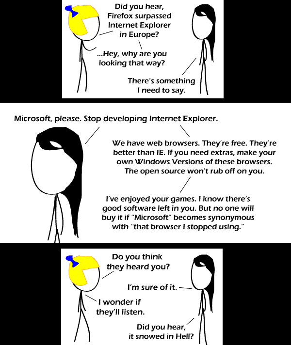

Comic JK 591
When I Feel Like It
⇤
<
?
>
⇥

⇤
<
?
>
⇥
Forum
.
RSS
.
Digg
.
Facebook
.
Reddit
.
Twitter
.
Stumbleupon
Enter your thoughts on number 591 here. Please, no spamming, trolling, phreaking, or Schadenfreude. Your mother's favourite browser is IE6 and she's still using it. Why is Ms. Pacman eating his head??? Ah, yes. The Windoze Explorer Web Drowser ... >How Quaint >>MSIE is still around??? >>>Yes. It is used by people who are barely smart enough to navigate the internet. >>> I find that offensive towards all multiplesclerosis patients! >>>>and used by grandmothers that always forward everything and reply all! >>>>>and used by people with virgin computers to download ffox >>>>>> You can download firefox using Windows command-line FTP. But how will I download Firefox or Opera without IE??? C:>ftp ftp.mozilla.org >PWNED. This. Thread. >>Wow. never woulda thought. Re: alt text, why would anyone use web-based programs? Or does your brain have a min. 30 ms lag, too? > You got to be a fat, arrogant, bald marketing twat who keeps throwing "SAAS", "in the clooouuuuud" and "2.0" around all the time to use web-based programs. >>Hey, I may be fat and arrogant, but I am certainly not, wait what was the third thing again? > I haven't used a desktop mail client since gmail started their closed beta. I haven't used a desktop chat application since gmail added google talk and aim. I haven't even used an answering machine or my cell phone's voice mail service since I got google voice. I guess I may want to start considering how much of my life google owns, but if you ignore google specifically, many people find web applications useful. I have met children as old as into their teens that only ever use the web browser on a computer. Look at facebook. >>Although there are some good web apps, local ones are generally superior. Also, you can use them when offline. >>> Speaking of google, now that they own everything they've started showing their true colours. As we can see with the net neutrality issue.. I think it's funny that the ad today is for a free scan of Windows errors. I wonder how many errors there are in Windows... > >9000 >>The ad that came up for me is for Chrome . . . But I have to use IE on school and work computers when I don't have my laptop! IE6 was the last well-made version and that's only because they kept it out for so long the updates eventually fixed most of the bugs... Miss black-hair is obviously out of touch with reality. IE8 is free. And the "Open source won't rub off on you" bit? Reread the GNU Public License. Any software using or leveraging code released under the GPL MUST BE open source. I used FFox for years and now Chrome. I left IE a long time ago. However, the new IE9 is actually interesting... Yeah, IE9 actually does most of what FFox and Chrome have always done, and almost as quickly while only taking up slightly more system resources and slightly more unstable...